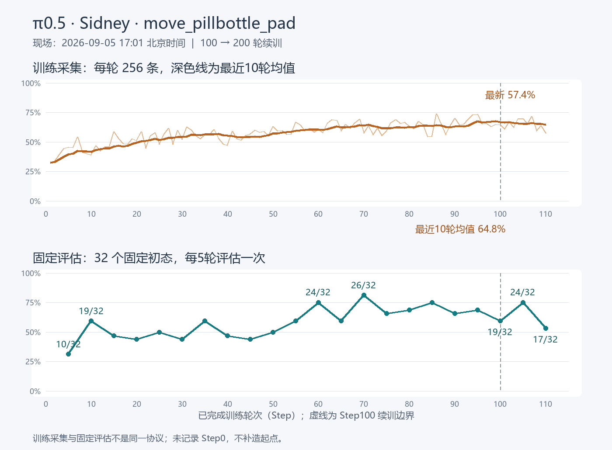

只读现场快照，详细数据见 CSV。训练为每轮256条；评估为固定32初态。
| Step | 成功/32 | 成功率 |
|---|---|---|
| 5 | 10/32 | 31.25% |
| 10 | 19/32 | 59.38% |
| 15 | 15/32 | 46.88% |
| 20 | 14/32 | 43.75% |
| 25 | 16/32 | 50.00% |
| 30 | 14/32 | 43.75% |
| 35 | 19/32 | 59.38% |
| 40 | 15/32 | 46.88% |
| 45 | 14/32 | 43.75% |
| 50 | 16/32 | 50.00% |
| 55 | 19/32 | 59.38% |
| 60 | 24/32 | 75.00% |
| 65 | 19/32 | 59.38% |
| 70 | 26/32 | 81.25% |
| 75 | 21/32 | 65.62% |
| 80 | 22/32 | 68.75% |
| 85 | 24/32 | 75.00% |
| 90 | 21/32 | 65.62% |
| 95 | 22/32 | 68.75% |
| 100 | 19/32 | 59.38% |
| 105 | 24/32 | 75.00% |
| 110 | 17/32 | 53.12% |